Paperdoll & Triple Outfits
16-slot layered armor hierarchy (Gorget, Coif, Bascinet, Chausses, Cuirass, Signet Ring). Instant 1-click swapping between Combat, Town, and Hunting loadouts with dynamic slash/pierce/blunt defense ratings.
The ultimate native C++20 core & .NET 10 WPF editor for Kingdom Come: Deliverance II. Full support for Steam & Xbox Game Pass saves, 5,604 item database, triple outfits, companion management, and quest fate controls.
Every parameter reverse-engineered from native game binaries with mathematical precision, automatic CRC/MD5 verification, and fail-safe backup guarantees.
16-slot layered armor hierarchy (Gorget, Coif, Bascinet, Chausses, Cuirass, Signet Ring). Instant 1-click swapping between Combat, Town, and Hunting loadouts with dynamic slash/pierce/blunt defense ratings.
Manage Pebbles or any acquired steed with 6 modular tack slots (Saddle, Caparison, Horseshoes, Chanfron, Saddlebags) and 3 Tack Presets. Full Mutt houndmaster perks, loyalty, obedience, and nourishment sliders.
Switch between Henry, Stash, and Horse saddlebags with 14 category filter pills. Spawn any official item with bilingual names, adjust condition, blood/dirt, duplicate, and legalize stolen items with zero trace.
Unlock, reset, or advance all Main Quests, Side Quests, and Activities. Dedicated 'Point of No Return' detection and Key NPC tracker (Hans Capon, Radzig, Theresa) with 1-click dead NPC resurrection.
Master Blacksmithing with 100% blade sharpening and tempering. Complete herbalism pouch editor (+50 or Max 999 for all herbs) and instant unlock of 92 crafting recipes and auto-brew perks.
High-performance C++20 core (KCD2SaveCore.dll) with miniz Deflate compression, header parsing, auto-backup creation (.bak), and native WGS / Steam path auto-detection.
Share savegames across friends even if they don't own DLCs. Strip or toggle DLC requirements (Lion's Crest, Gallant Huntsman, Shields of Seasons, Story Expansions) with 1 click to unlock saves on any base installation.
Explore high-resolution captures of every screen and dialog in the editor.
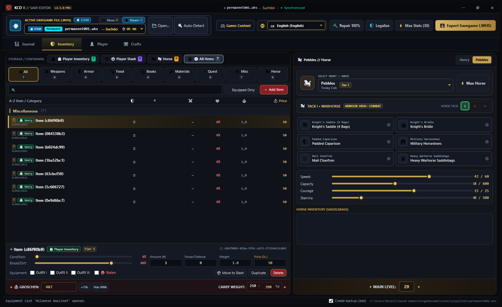
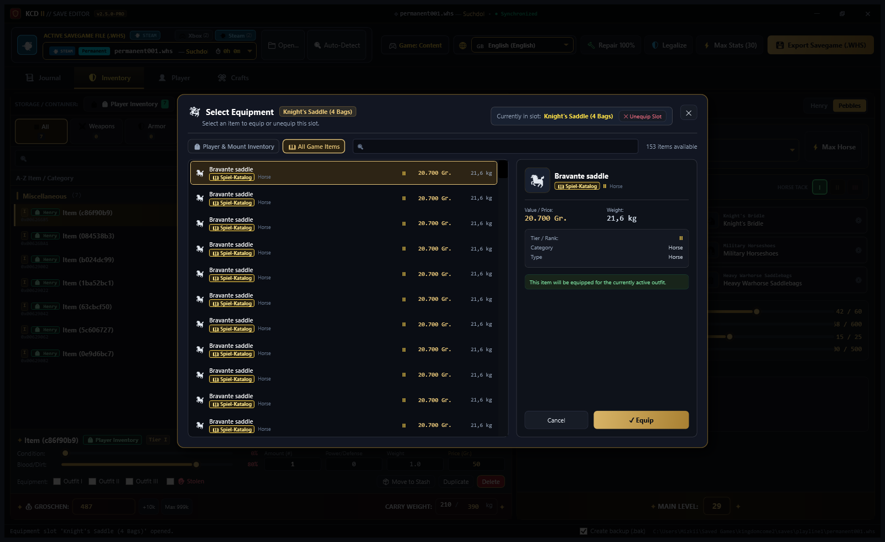
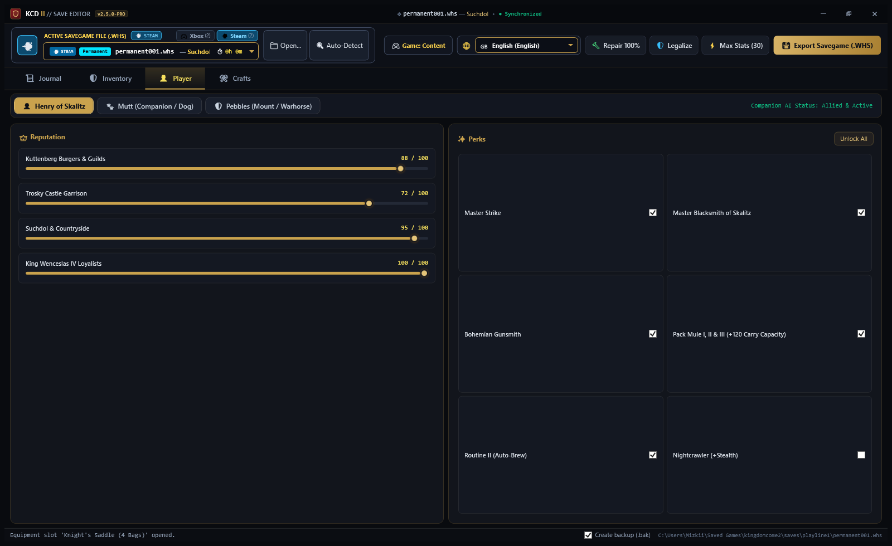
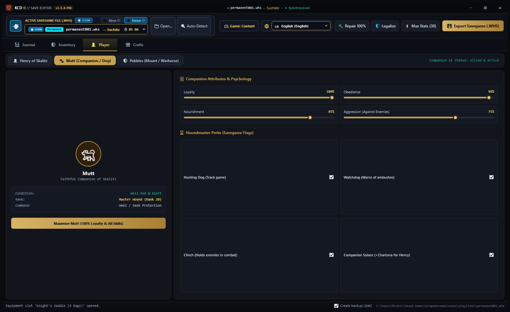
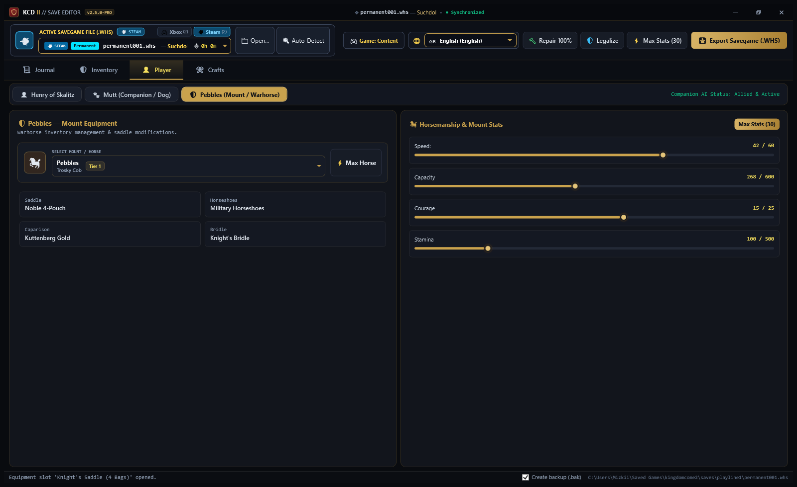
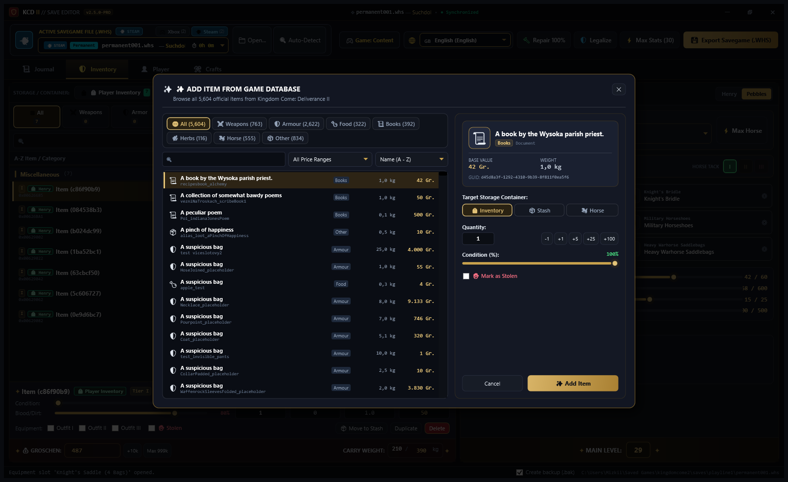
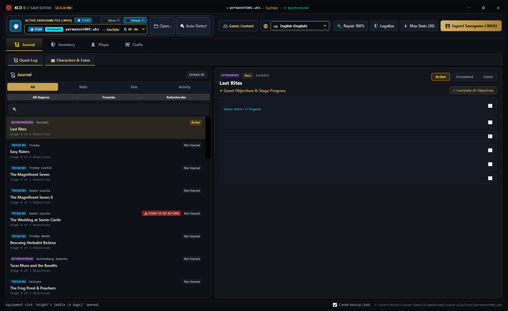
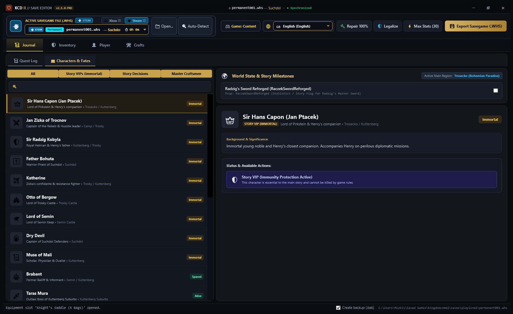
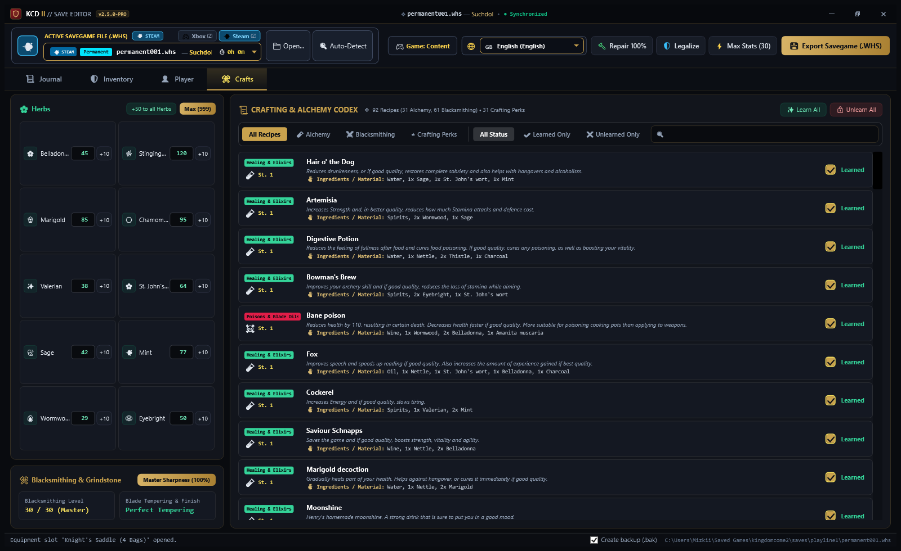
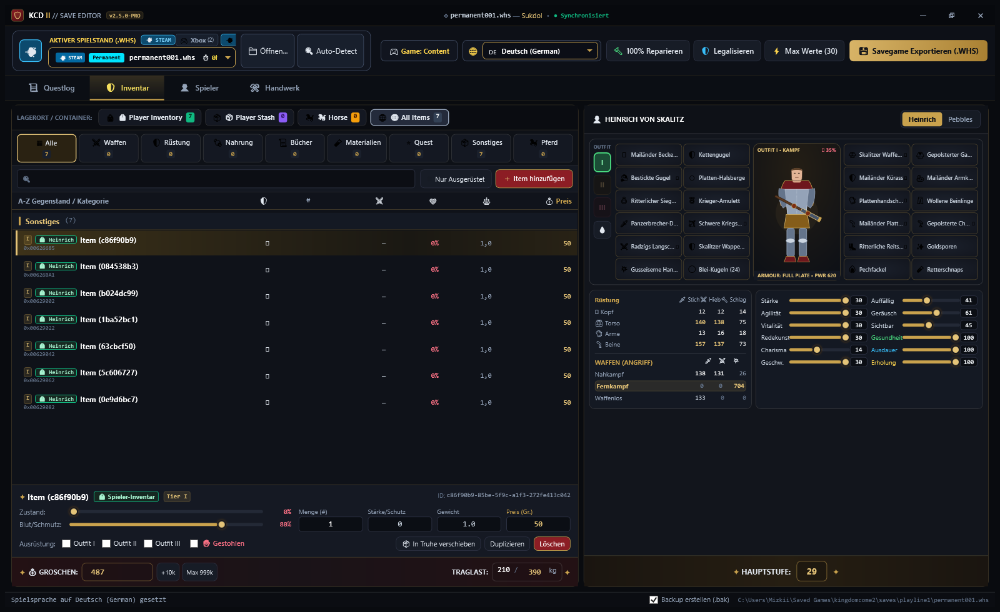
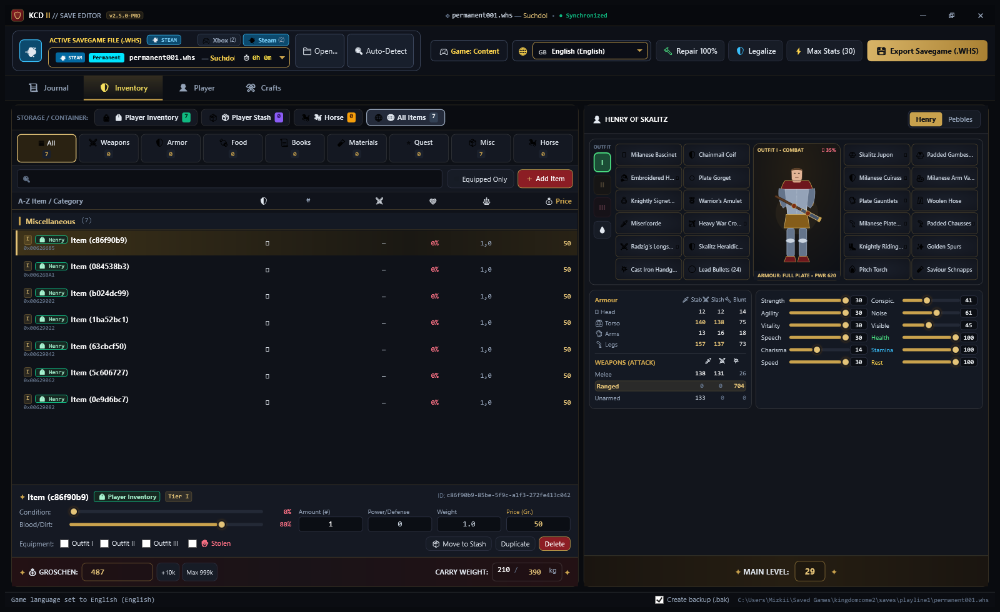
Engineered from the ground up for zero crashes, lightning-fast parsing, and clean modular code.
Common questions about save compatibility, safety guarantees, and game mechanics.
%USERPROFILE%\Saved Games\kingdomcome2\saves\ as well as Microsoft Store / Xbox Game Pass WGS (Windows Gaming Storage) encrypted container directories with zero manual configuration.